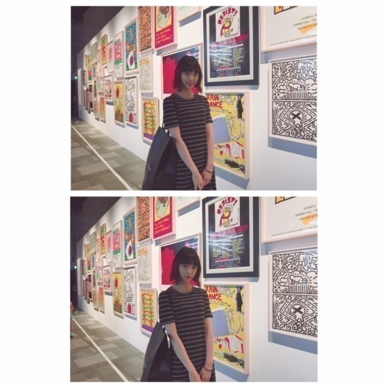

2018/0821Tue残してく。
突然ですが
プライベートの目標を発表します
それは...
いろんな温泉に行くこと！
お母さんや友達とたまに行くけどまだ未開拓な温泉地がたくさんあるから家族で行けたらいいな〜
おすすめの場所があったら教えて下さい！

お休みの日はメイクしない時とする時があって
(気分なのですが) この日はすっぴんdayでした
なんか、さっぱりしてる〜
この間自分でメイクをした日に松村さんに
まぶたキラキラだねー
撮影終わりかと思ったよーって言ってもらえて
嬉しかったな♡
アイシャドウは全体と二重幅の2色塗りがマイルールです！
近況
銀魂2を絢音とお仕事終わりに観てきました^^
始まってすぐからずっとお腹抱えて笑ってました...
本当に面白い！ムロツヨシさんと佐藤二郎さんは50回目のファーストキスに続き安定にドツボでした。苦しかったです、笑
ストーリーも涙ありで魅入りましたし
学生時代にアニメは少し観ていたのですが
全話制覇！では無かったので内容がちゃんと分かるか不安でした。でもわたしみたいに銀魂あまり詳しくない！という方でも100%楽しめますので
ぜひに。わたしはこれを機にアニメも最初からちゃんと観始めようと思いました...
橋本環奈さんはもちろんずっとかわいいけれど話し方、声が癒しすぎました
神宮ライブに来てくださっててトロッコから橋本環奈さんを見つけた時、えっっやはり凄くかわいいっってなったなぁ
あとは銀魂だとアニメの時から器用でさらっと頭のいい沖田総悟さんが気になっていたのですが(胸の内に秘めた熱意や根性が時たま男らしくてギャップです)
実写版映画でのあの電車のシーン...
破壊力が...すごくて。
吉沢亮さんの目のお芝居にも引き込まれました
殺意と決意が入り混ざっていて格好いいだけでは済まされず、わたしの語彙力が乏しくて申し訳ないです
絢音もすっごく楽しかったって言っていてね、
終わった後あーだこーだ焼肉を食べながら話しました。笑
映画 や 美術館 など
楽しみながら自分の身になるものや蓄えられるものを見つけられる趣味があることを嬉しく思います


9月のガールズアワードは
お仕事の都合で出られなくなりました。
今まで出させていただいていて毎回
楽しみにしていたので残念ですが...
わたしもお仕事、頑張ります。
そしてメンバーのランウェイを
携帯越しに見守っています。
そして...
乃木坂46
結成7周年 おめでとうございます
ありがとうございます 。笑
皆さんの温かく力強い支えがありきの私達です。
感謝の言葉だけでは伝えきれません
これからも乃木坂46の変化を成長を、一緒に楽しんでいただけたら嬉しいです
皆さんが大好き^^

では！
2018/08/21 18:48


コメント(850)
温泉なら、遠いけど佐賀の嬉野温泉や武雄温泉オススメ！
お仕事がんばれ〜
未央奈さんの笑顔が1番です！
o(^▽^)o
銀魂って全く観たことないけど、映画は面白そうだから興味あります。
でも、話も設定もわからないのに楽しめるのか心配です。
七周年おめでとうございます。
o(^o^)o
プライベートの目標で温泉巡り良いね！
自分の地元だからってのもあるけど富山の宇奈月温泉は景色も良いし割とおすすめよ！！
そして乃木坂結成7周年おめでとo(^▽^)o
これからも未央奈単推しとして応援していきます…！！
温泉は僕も行ったことないけど山形？の銀山温泉が凄い自然豊かな綺麗なところで僕もいつか行ってみたいなーと思ってます！
乃木坂46結成7周年ほんとにおめでとう〜！乃木坂に、そしてみおちゃんに出会えて良かったと日々思います！これからも陰ながらではありますが変わらず応援していきます！
すき！
福島県会津若松市の東山温泉だばい！笑
私、この前伊豆の温泉行きました！
「伊豆高原のゆ」っていうところで泥パックできるんです！
私は全身にやっちゃいました笑
未央奈ちゃんも行ってみてください!!
7周年おめでとう これからも応援します！
頑張ってください
城崎温泉もオススメやなぁ
銀魂はアニメ最初から観るなら結構なボリュームあるけど、面白いから観る価値あるよ(^^)ギャグ回が多いけど、たまにシリアス回もあってギャップがあってそれがまた良いんだよね。
名古屋楽しみにしてるね
毎日忙しい中でもアクティブですな〜
さすが映画見様ですね！
今日は乃木坂46結成7周年です。
この日があるから未央奈も今、乃木坂46にいるんですよね。
未央奈はもちろん、メンバーの全員からいつも沢山の元気をもらっています。
本当にありがとう。
沢山元気をもらっている分、僕らもみんなを応援し続けますね！
僕たちファンは乃木坂46の味方です！！
今までも、これからも。
8年目からも頑張ってくださいね！
またの更新待ってます〜
銀魂すごく好きだから未央奈もハマってるって聞くととっても嬉しい！♡原作終わっちゃうの悲しいけど、、
またいつか握手会に行って、未央奈の可愛さを見つつ銀魂の話したいなって思った！(´ｰ｀)
最後の未央奈が可愛すぎて…
自分的には兵庫県の城崎温泉がおススメです！
ぜひ行ってみてください！
今度行って来るんだ！！
ぜひプリン会で！
乃木坂7周年おめでとうございます。
頑張れ。
俺も見に行きたい!!
7周年おめでとうございます!!
これからも上り坂でがんばって!!
私の故郷、島根には温泉がたくさんありますよ！「玉造温泉」「海潮温泉」など岐阜と同じように自然豊かで、源泉も豊富です！
なかなか機会がないかもしれませんが、いつか島根にも来てください！！
温泉は僕の地元が京丹後市って言う京都の北端なんやけど
そこは温泉がたくさんあるからまた行ってみて欲しいです！！
んー、温泉かー、やっぱり大分の別府温泉は有名だし行って損はないと思う！
鹿児島の砂風呂とかもいいかも！なんとなくだけど九州は温泉が豊かだと思うよー
島根県来てね！
佐賀の温泉にもきてー
いろんなタイプの風呂があるけん、1回はいっちょったほうがいい‼︎‼︎!
銀魂2の紹介と報告ですね。
自分はようやく今日前々回堀ちゃんが報告してくれた「カメラを止めるな！」を観たところです。
堀ちゃんにお薦めの温泉は「草津温泉ゆずの香り」です。
オテンキのりさんのように突っ込みたくなったと思いますが違います。
堀ちゃんは仕事でハードな上、休日は映画館・ショッピング・外食。
この上温泉？！たまにはゆっくりお家で疲れを癒して欲しいです。
それで「草津温泉ゆずの香り」の入浴剤です。
しっかりと疲れを癒してきてね！！
おすすめの温泉は石川県 加賀市 山中温泉菊の湯がおすすめだよ！✨✨
未央奈はほんとスッピンでも可愛すぎです！！目もおっきいし！！❤❤
そして何より、7周年おめでとう これからの未央奈の活躍を期待してます。
これからも応援し続けるから頑張ってね！！
またブログ更新楽しみにしてるね！✨
(っ`･ω･´)っﾌﾚｰｯ!ﾌﾚｰｯ!未央奈❤
かわいすぎる！！！
温泉地は兵庫の城崎温泉(きのさきおんせん)がオススメです！是非行ってみてね！
忙しいと思うけど体調に気を付けて頑張って下さい！応援してます！
温泉か〜
まずは岐阜の下呂温泉だよね？
僕の近くでは有馬温泉がいいよ！
城崎温泉もいいよ！
やっぱり温泉はいいよね！
みお大好き
大分の別府の温泉はどこもオススメだよ！
家族とか友達とか今度ゆっくり行ってみてください！
2期生として入ってくれてありがとう( ᐢ˙꒳˙ᐢ )！！
最後の写真めっちゃ好き！！（笑）
結成7周年おめでとう これからもまだまだー✊
1枚目の写真可愛い！最高！ど真ん中
温泉っていいよね、長風呂してると寝そうになるんですよ僕
寝ぼせて倒れないようにって思ってても気持ちいいからねー
長くなったな、またねー
何回行っても落ち着いた雰囲気でサイコーです！
温泉は、ベタだけど、大分県の別府か湯布院か、熊本県の黒川温泉がおすすめです。
これからも、頑張ってね。
コメントする